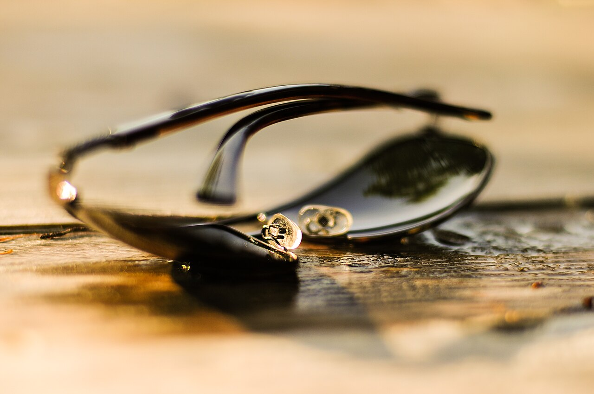
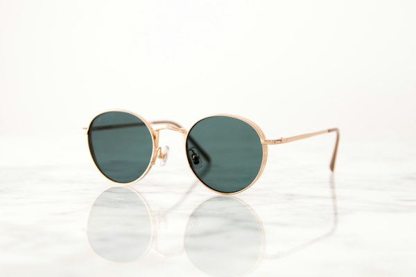
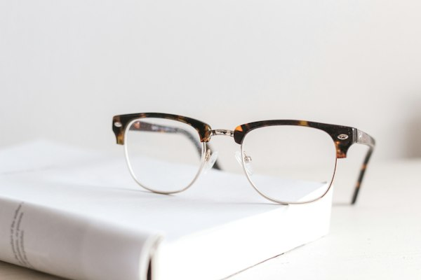
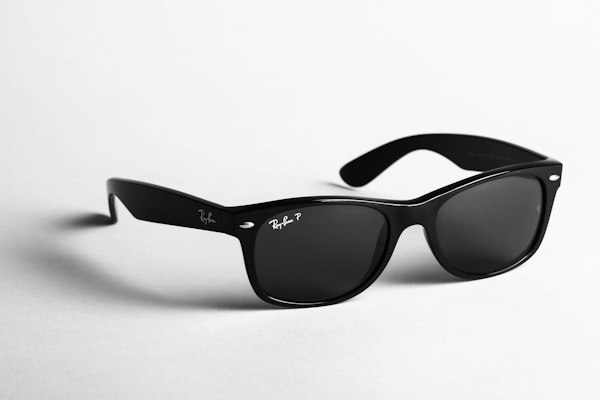

GRAU
GRAURedondo Clássico
Aro redondo de acetato, leve e versátil para o dia a dia.
a partir de R$ 280 valor ilustrativoExperimentar esse estilo →Armações que combinam com o seu rosto e lentes para cada momento do seu dia.
Ver a coleção ↓Experiência demonstrativa: esta página não mede sua vista nem calcula grau. O orçamento real é feito na loja, com receita e prova de armação.

FOTO ILUSTRATIVA · MARCA FICTÍCIA · FOTO: PIXEL.LA / WIKIMEDIA COMMONS ↗Sete modelos fictícios para mostrar como um catálogo de óculos pode ser apresentado, com filtro entre armações de grau e de sol. Os valores abaixo são apenas ilustrativos.
7 modelos na coleção
GRAUAro redondo de acetato, leve e versátil para o dia a dia.
a partir de R$ 280 valor ilustrativoExperimentar esse estilo → GRAU
GRAUCantos definidos e ponte firme, para quem prefere linhas retas.
a partir de R$ 320 valor ilustrativoExperimentar esse estilo →
GRAUAro geométrico para quem quer sair do formato tradicional.
a partir de R$ 350 valor ilustrativoExperimentar esse estilo →
GRAUEstrutura discretamente dourada, quase imperceptível no rosto.
a partir de R$ 390 valor ilustrativoExperimentar esse estilo →
SOLLente esverdeada clássica, boa para dirigir e para o sol forte.
a partir de R$ 260 valor ilustrativoExperimentar esse estilo → SOL
SOLPonta levantada e aro marcante, um clássico que valoriza o olhar.
a partir de R$ 310 valor ilustrativoExperimentar esse estilo →Lente escura redonda com brilho leve, inspirada nos anos 70.
a partir de R$ 240 valor ilustrativoExperimentar esse estilo →Exemplos de como apresentar opções de lentes em um site de ótica. As características abaixo são ilustrativas: a indicação real depende da receita e de avaliação oftalmológica.
Reduz reflexos de telas e luzes, deixando a visão mais confortável em ambientes internos.
Apresentada como opção para quem passa muitas horas na frente de telas. A necessidade varia pessoa a pessoa.
A lente escurece ao sol e clareia em ambiente fechado, usando um só par para o dia inteiro.
Indicada para dirigir e praticar esportes ao ar livre, reduzindo reflexos de superfícies planas.
O grau é definido por um profissional habilitado. Esta demonstração não calcula grau, não examina a vista e não recomenda lentes.
Responda três perguntas e gere uma lista local com sugestões de armação e lembretes para a sua prova. É uma prévia no seu navegador, não um pedido.
Nada é enviado, salvo ou compartilhado. O formulário só monta o resumo na própria página e pode ser copiado ou baixado em TXT.
Lista gerada localmente, sem envio de dados. Marca fictícia: nenhuma loja, venda ou atendimento real está envolvido.
Não. Lumina Ótica é uma marca fictícia criada pela MOSS Digital para demonstrar um site de ótica. Não há loja, estoque, venda ou atendimento por trás desta página.
Não. O grau vem de uma receita emitida por profissional habilitado. Esta demonstração apenas organiza sugestões de estilo e lembretes para a sua visita.
Não. Os valores são ilustrativos, apenas para mostrar como um catálogo pode ser apresentado. Um orçamento real depende da armação, das lentes e da loja.
Nada. As respostas ficam no seu navegador, não são enviadas nem armazenadas. Você pode copiar o resumo ou baixar um TXT.
Sim. Identidade, textos, fotos e recursos podem ser adaptados ao seu negócio. Fale com a MOSS Digital para conhecer os modelos e pedir um orçamento.
Converse sobre a identidade visual, o catálogo e os recursos que o seu site precisa.